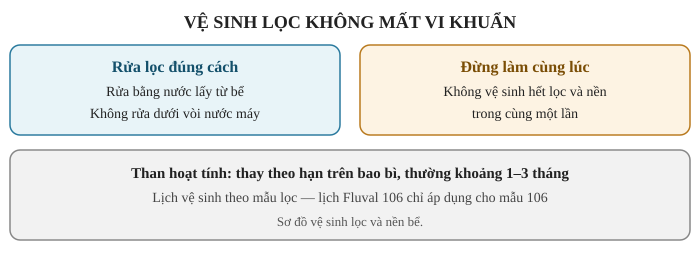

Vệ sinh lọc và nền bể không làm mất vi khuẩn có lợi
Tác giả: Ruler
Lọc bẩn là chuyện bình thường. Sau vài tuần chạy, bọt lọc ngả màu nâu, dòng nước chảy ra yếu hơn, cặn bẩn đóng ở ống hút và cánh quạt. Người mới nhìn lọc bẩn thường có một phản xạ rất tự nhiên: tháo hết lọc ra, rửa sạch từng món dưới vòi nước, thay toàn bộ vật liệu lọc mới, rồi lắp lại cho bể "sạch như mới". Phản xạ đó làm bể sạch thật, nhưng cũng làm bể mất đi thứ quan trọng nhất mà lọc đang giữ: vi khuẩn có lợi.
Bài này viết về cách vệ sinh lọc và nền bể cho bể cộng đồng nước ngọt đã chạy lọc xong. Bài không viết lại chu trình nitơ đầy đủ, vì chu trình đó đã được giải thích ở Cách xử lý nước mới trước khi thả cá. Bài này chỉ dùng một kết quả của chu trình đó: vi khuẩn trong lọc chuyển amoniac thành nitrit rồi thành nitrat, và phần lớn vi khuẩn đó sống bám trên bề mặt vật liệu lọc, nền bể và thành bể. Vệ sinh đúng là vệ sinh để dòng nước chảy lại bình thường, không phải vệ sinh để diệt hết vi khuẩn.
Trong lọc có gì, và vì sao không được rửa sạch tất cả
Lọc bể cá làm ba việc khác nhau, và mỗi việc do một loại vật liệu khác nhau đảm nhận. Chewy, trong hướng dẫn vệ sinh lọc của mình, chia vật liệu lọc thành ba loại: cơ học, sinh học và hóa học. Hiểu được ba loại này là bước đầu tiên, vì mỗi loại có cách vệ sinh và thời gian thay khác nhau.
Vật liệu cơ học giữ lại cặn bẩn để bạn lấy ra. Đó là bông lọc, bọt lọc thô, tấm lọc trong hộp lọc treo hoặc lọc thùng. Vật liệu này bẩn nhanh nhất, vì nó chặn trực tiếp thức ăn thừa, phân cá và cặn lơ lửng trong nước. Khi nó tắc, dòng nước qua lọc yếu đi, và đó là dấu hiệu đầu tiên cho thấy lọc cần vệ sinh.
Vật liệu sinh học là nơi vi khuẩn có lợi sống. Đó là bọt lọc mịn, vòng gốm, bi sinh học và các vật liệu xốp có diện tích bề mặt lớn. Chewy viết các vật liệu này cho vi khuẩn chỗ bám, và vi khuẩn đó chuyển amoniac độc thành nitrit rồi thành nitrat. Lớp màng nâu nhờn bám trên vật liệu sinh học nhìn giống cặn bẩn, nhưng đó chính là nơi vi khuẩn đang sống. Rửa sạch lớp màng đó dưới vòi nước là rửa mất vi khuẩn, không phải rửa sạch lọc.
Vật liệu hóa học hấp thụ một số chất hòa tan trong nước trong thời gian ngắn. Ví dụ thường gặp nhất là than hoạt tính, dùng để hút màu nước và mùi. Vật liệu hóa học không rửa sạch để dùng lại được như vật liệu cơ học hay sinh học. Khi nó đã no, nó ngừng hấp thụ, và cách xử lý là thay mới theo hướng dẫn của hãng, không phải rửa lại.
Ngoài ba loại vật liệu, lọc còn có vỏ lọc, ống hút, ống xả và cánh quạt. Những bộ phận bằng nhựa này không giữ vi khuẩn theo cách vật liệu sinh học giữ, vì vậy cách vệ sinh chúng khác với cách vệ sinh vật liệu sinh học. RSPCA viết cần giữ các bộ phận của lọc sạch để lọc chạy trơn tru và hiệu quả, trong đó có việc tháo và vệ sinh cánh quạt. Petco, trong câu trả lời của kỹ thuật viên thú y của mình, viết các bộ phận lọc bằng nhựa có thể rửa và chà bằng nước máy, trong khi bọt lọc thì phải rửa bằng nước bể. Phân biệt được bộ phận nào rửa bằng nước máy được và bộ phận nào không là điểm mấu chốt của cả bài này.
Khi nào lọc cần vệ sinh
Lọc không cần vệ sinh theo lịch cố định giống nhau cho mọi bể, vì mỗi bể có số lượng cá, lượng thức ăn và loại lọc khác nhau. Chewy liệt kê các dấu hiệu cho thấy lọc cần vệ sinh: dòng nước chảy ra giảm, lọc có mùi khó chịu, lọc tắc vì cặn bẩn, đã một tháng kể từ lần thay hoặc vệ sinh vật liệu lọc gần nhất, hoặc các chỉ số nước đo được đang lệch khỏi mức bình thường. Trong các dấu hiệu đó, dòng nước giảm là dấu hiệu dễ thấy nhất và đáng tin nhất cho người mới. Nếu dòng nước ra khỏi lọc yếu hẳn so với khi lọc mới vệ sinh, hãy kiểm tra lọc trước khi nghĩ tới nguyên nhân khác.
Một nguyên tắc quan trọng mà Chewy nhấn mạnh là kiểm tra lọc trong mỗi lần thay nước, nhưng chỉ vệ sinh khi cần. Bài viết đó viết rõ: không phải lần thay nước nào cũng cần vệ sinh lọc. Nếu dòng nước vẫn mạnh, vật liệu lọc chưa tắc và các chỉ số nước vẫn ổn định, hãy để lọc yên. Vệ sinh lọc quá thường xuyên, đặc biệt là vệ sinh toàn bộ vật liệu lọc trong một lần, làm xáo trộn vi khuẩn nhiều hơn là giúp bể sạch hơn.
Tần suất vệ sinh theo loại lọc cũng khác nhau, và các hãng ghi khác nhau. Bảng dưới đây tóm tắt các hướng dẫn đã mở trực tiếp, không phải một lịch chung cho mọi lọc.
| Loại lọc / vật liệu | Hướng dẫn đã mở | Nguồn |
|---|---|---|
| Lọc bọt biển | Rửa nhẹ trong nước bể khi cặn bám làm giảm dòng chảy; làm trong lúc thay nước, mỗi tuần hoặc theo lịch thay nước | Chewy, bảng hướng dẫn theo loại lọc |
| Lọc treo sau bể | 1–2 lần mỗi tháng hoặc thường xuyên hơn tùy kích thước bể và lượng cá; rửa bọt lọc và vật liệu sinh học trong nước bể | Chewy, bảng hướng dẫn theo loại lọc |
| Lọc trong, lọc góc, lọc hộp | Rửa vật liệu cơ học và sinh học trong nước bể khi cần; thay vật liệu hóa học mỗi tháng | Chewy, bảng hướng dẫn theo loại lọc |
| Lọc thùng ngoài | Rửa vật liệu cơ học và sinh học trong nước bể khi cần; thay vật liệu hóa học mỗi tháng; 1–2 lần mỗi tháng hoặc thường xuyên hơn tùy bể | Chewy, bảng hướng dẫn theo loại lọc |
| Lọc thùng Fluval 106 (ví dụ một mẫu cụ thể) | Mỗi tháng: kiểm tra và vệ sinh cánh quạt, trục gốm, ống hút và ống dẫn; mỗi 3 tháng: vệ sinh bộ mồi và gioăng, thay tấm lọc mịn; mỗi 6 tháng: thay than hoạt tính và rửa vật liệu sinh học BIOMAX; mỗi năm: thay bọt lọc | Sách hướng dẫn sử dụng Fluval 106 |
| Hộp lọc Tetra Whisper | Thay hộp lọc ít nhất mỗi bốn tuần, hoặc khi thấy dòng nước giảm rõ rệt; không rửa hộp lọc để dùng lại | Tetra, trang hỏi đáp và trang hướng dẫn |
Bảng trên cho thấy không có một con số tần suất duy nhất cho mọi lọc. Lịch của Chewy là hướng dẫn chung theo loại lọc, lịch của Fluval là lịch của riêng mẫu lọc thùng 106, lịch của Tetra là lịch thay hộp lọc của riêng dòng lọc Whisper. Người mới nên làm theo hướng dẫn của lọc mình đang dùng trước, rồi mới dùng bảng trên để tham khảo. Nếu hướng dẫn của lọc bạn dùng và bảng trên khác nhau, hãy làm theo hướng dẫn của lọc bạn dùng, vì mỗi hãng thiết kế vật liệu lọc của mình khác nhau.
Về vật liệu dùng một lần, Chewy viết bông lọc nên thay khoảng mỗi tuần một lần hoặc khi tắc, than hoạt tính nên thay khi hết hạn sử dụng, thường là khoảng một tháng. Cách làm đúng là đọc thời hạn ghi trên bao bì vật liệu bạn đang dùng, ghi ngày thay vào sổ, và thay khi tới hạn, thay vì nhớ một con số chung cho mọi loại than hoạt tính.
Quy tắc vàng: rửa bằng nước bể đã hút ra, không rửa dưới vòi

Quy tắc quan trọng nhất của bài này được cả bốn nguồn đã mở nhắc lại bằng những từ khác nhau, và người mới nên nhớ đúng một câu: rửa vật liệu lọc bằng nước bể đã hút ra khi thay nước, không rửa dưới vòi nước máy chưa xử lý.
RSPCA viết trong mục thay nước của mình: khuấy nhẹ bọt lọc trong nước bể đã hút ra, vì việc đó làm sạch bọt lọc khỏi cặn rắn, nhưng không bao giờ rửa bọt lọc dưới vòi, vì làm vậy sẽ giết vi khuẩn có lợi. Cách xử lý nước mới trước khi thả cá của website này cũng đã dùng đúng hướng dẫn đó. Petco viết bạn có thể rửa bọt lọc bằng nước bể, việc đó giữ lại vi khuẩn có lợi trong bọt lọc, và nhắc lại trong một câu trả lời khác: rửa vật liệu lọc bằng nước bể, không phải nước máy, rồi lắp lại. Chewy viết không bao giờ rửa vật liệu lọc sinh học trong nước máy chưa xử lý, và rửa vật liệu lọc có thể dùng lại trong nước bể đã hút ra. Sách hướng dẫn lọc thùng Fluval 106 viết rửa vật liệu sinh học bằng nước bể, không bao giờ rửa bằng nước máy, và rửa bọt lọc bằng nước bể hoặc nước máy đã khử clo.
Vì sao nước máy chưa xử lý lại nguy hiểm với vi khuẩn lọc? Vì nước máy chứa clo hoặc cloramin để khử trùng cho người uống, và hai chất đó giết vi sinh vật, trong đó có vi khuẩn có lợi trong lọc. Thay nước cho bể cá đúng cách: bao nhiêu, bao lâu và lỗi thường gặp đã viết kỹ về clo và cloramin: clo bay đi nếu để nước đứng 24 giờ, cloramin thì không, và natri thiosulfat trung hòa được clo nhưng không phá vỡ được cloramin. Khi bạn rửa vật liệu lọc dưới vòi, clo và cloramin trong nước máy tiếp xúc trực tiếp với vi khuẩn trong vài giây và làm chết một phần lớn vi khuẩn đó. Bể sau đó phải mất nhiều ngày hoặc nhiều tuần để vi khuẩn phát triển lại đủ, và trong thời gian đó amoniac có thể tăng lên. Rửa bằng nước bể đã hút ra thì khác: nước đó đã khử clo từ trước, đúng nhiệt độ bể, và vi khuẩn trong vật liệu lọc không bị sốc vì clo hay nhiệt độ.
Có hai ngoại lệ cần nói rõ để người đọc không áp dụng quy tắc này sai chỗ. Thứ nhất, các bộ phận lọc bằng nhựa như vỏ lọc, ống hút, ống xả và cánh quạt có thể rửa bằng nước máy, theo câu trả lời của Petco. Thứ hai, bọt lọc của Fluval được phép rửa bằng nước bể hoặc nước máy đã khử clo, theo sách hướng dẫn Fluval 106. Hai ngoại lệ này không làm thay đổi quy tắc chính: vật liệu sinh học như vòng gốm và bi sinh học thì chỉ rửa bằng nước bể, không rửa bằng nước máy chưa xử lý. Khi bạn không chắc một món đồ thuộc loại nào, hãy rửa nó bằng nước bể đã hút ra. Cách đó an toàn cho mọi loại vật liệu.
Các bước vệ sinh lọc, từ đầu tới cuối
Trình tự dưới đây áp dụng cho hầu hết các loại lọc gia đình. Nếu lọc của bạn là lọc thùng ngoài hay lọc có van khóa riêng, hãy làm thêm theo hướng dẫn của hãng, vì mỗi hãng có cách tháo lắp khác nhau.
Bước 1 — Chuẩn bị trước khi tháo lọc. Chuẩn bị một chiếc xô sạch, riêng cho bể cá, và một chiếc khăn. Nếu bạn đang thay nước, hãy hút nước bể ra xô trước để dùng làm nước rửa vật liệu lọc. Chewy viết trước khi vệ sinh lọc, hãy rút điện lọc, đặt xô sạch gần đó, và nếu đang thay nước thì giữ lại một phần nước bể đã hút ra để rửa vật liệu lọc có thể dùng lại. Giữ vật liệu lọc ướt trong lúc làm việc, đừng để vật liệu sinh học khô ra, vì vi khuẩn chết khi khô.
Bước 2 — Rút điện và tháo lọc. Rút điện lọc trước khi cho tay vào nước. Sách hướng dẫn Fluval viết luôn ngắt mọi thiết bị trong bể khỏi nguồn điện trước khi cho tay vào nước, trước khi tháo lắp, và bất cứ khi nào thiết bị đang được lắp đặt, bảo trì hay cầm nắm. Chewy cũng viết tắt và rút điện lọc để mô-tơ không chạy khô trong lúc bạn làm việc. Đừng tháo lọc khi lọc vẫn đang cắm điện.
Bước 3 — Rửa nhẹ vật liệu lọc trong nước bể. Lấy vật liệu lọc ra, đặt vào xô nước bể đã hút ra, khuấy nhẹ hoặc bóp nhẹ để cặn bẩn rơi ra. Chewy viết rửa nhẹ vật liệu có thể dùng lại, khuấy vật liệu cơ học và sinh học để lấy cặn bẩn lỏng ra, và tránh chà mạnh vật liệu sinh học. Với vòng gốm, Chewy viết chúng là một phần của lọc sinh học và không cần vệ sinh trừ khi tắc. Với bi sinh học, Chewy viết chúng có thể rửa nhẹ bằng nước bể đã hút ra nếu cặn bẩn tích tụ. Với bọt lọc, Chewy viết rửa bọt lọc có thể dùng lại trong nước bể đã hút ra, và thay bọt lọc khi nó bắt đầu rã ra. Đừng chà vật liệu sinh học bằng bàn chải, đừng bóp mạnh tới khi nước trong xô hoàn toàn trong, vì mục tiêu là lấy cặn bẩn làm tắc dòng chảy ra, không phải làm vật liệu trắng như mới.
Bước 4 — Vệ sinh vỏ lọc, ống hút và cánh quạt. Dùng bàn chải riêng cho bể cá để cọ cặn bám trong vỏ lọc, ống hút và cánh quạt. RSPCA viết cần giữ các bộ phận của lọc sạch để lọc chạy trơn tru, trong đó có việc tháo và vệ sinh cánh quạt. Petco viết các bộ phận lọc bằng nhựa có thể rửa và chà bằng nước máy. Không dùng xà phòng hay chất tẩy rửa gia đình cho bất kỳ dụng cụ bể cá nào. Chewy, Fluval và Aqueon đều dặn điều này bằng những từ khác nhau: xà phòng còn sót lại dù rất ít cũng có thể gây hại cho cá. Nếu cánh quạt bị kẹt vì cặn, hãy tháo ra theo hướng dẫn của hãng, ngâm và cọ nhẹ, rồi lắp lại đúng vị trí.
Bước 5 — Thay vật liệu đã hết hạn, giữ lại vật liệu sinh học. Thay bông lọc đã tắc, thay than hoạt tính đã hết hạn theo ngày ghi trên bao bì, thay hộp lọc dùng một lần theo hướng dẫn của hãng. Chewy viết thay vật liệu dùng một lần hoặc vật liệu hóa học theo hướng dẫn của hãng, và đừng tự động thay vật liệu sinh học. Fluval viết không bao giờ thay toàn bộ vật liệu sinh học trong một lần, vì sẽ làm mất vi khuẩn có lợi. Chewy viết tránh vệ sinh hoặc thay toàn bộ vật liệu sinh học trong một lần, vì việc đó giúp giữ vi khuẩn có lợi và giữ lọc sinh học hoạt động. Nếu bạn cần thay một phần vật liệu sinh học đã rã ra, hãy thay từng phần, cách nhau vài tuần, để vi khuẩn kịp bám vào vật liệu mới. Đây là điểm mà người mới hay làm ngược: họ thay toàn bộ vật liệu lọc mới trong một lần để bể "sạch", rồi ngạc nhiên khi amoniac tăng lên trong tuần sau đó.
Bước 6 — Lắp lại và khởi động lọc. Đặt vật liệu lọc về đúng vị trí, đổ nước vào lọc nếu lọc của bạn cần mồi nước trước khi chạy, rồi mới cắm điện. Chewy viết khi lắp lại và khởi động lọc, hãy chắc chắn vật liệu lọc đặt đúng vị trí và lọc đã đầy nước trước khi bật. Fluval viết không được để lọc chạy khô, vì chạy khô có thể làm hỏng mô-tơ. Sau khi bật lại, kiểm tra dòng nước ra khỏi lọc có đều không, kiểm tra có rò rỉ ở khớp nối hay không, và kiểm tra mực nước trong bể đã về mức bình thường chưa.
Bước 7 — Đo nước trong những ngày sau đó. Sau khi vệ sinh lọc, hãy đo amoniac và nitrit trong hai tới ba ngày tiếp theo, đặc biệt nếu bạn đã thay một phần vật liệu lọc. Nếu hai chỉ số vẫn ở 0 và cá bơi bình thường, việc vệ sinh đã thành công. Nếu amoniac tăng lên sau khi vệ sinh lọc, hãy làm theo cách xử lý khẩn cấp ở Thay nước cho bể cá đúng cách: bao nhiêu, bao lâu và lỗi thường gặp: thay một phần nước đã khử clo, giảm cho ăn, đo lại mỗi ngày, và đừng thả thêm cá mới. Đừng mua thuốc để "cứu" vi khuẩn, vì vi khuẩn cần thời gian để phát triển lại, không phải thuốc.
Vệ sinh nền bể: hút cặn bằng ống xi-phông, đừng xới toàn bộ nền
Nền bể là nơi thức ăn thừa, phân cá và lá cây rụng tích tụ. Cặn bẩn trong nền phân hủy thành amoniac, vì vậy hút cặn ở nền là một phần của thay nước, không phải việc riêng biệt. Tetra viết khi thay nước, hãy khuấy sỏi hoặc dùng dụng cụ hút sỏi, và dùng dụng cụ hút sỏi để hút cặn bẩn mà không làm xáo trộn đồ trang trí hay phải vớt cá ra. Tetra cũng viết đừng tháo dỡ bể để vệ sinh, mà hãy để cá và sỏi ở nguyên vị trí, dùng ống xi-phông để thay một phần nước và làm sạch sỏi khỏi cặn bẩn.
Cách hút nền đúng là đẩy ống hút xuống sâu trong sỏi để cặn bẩn bị hút lên, trong khi sỏi nặng hơn sẽ rơi trở lại xuống đáy. Hướng dẫn vệ sinh sỏi của DBC Aquatics viết đẩy ống hút sâu vào nền, cặn bẩn sẽ bị hút lên, sỏi sẽ đảo lên rồi rơi trở lại, và chỉ vệ sinh từ một phần ba tới một nửa nền bể trong mỗi lần để tránh làm xáo trộn chu trình nitơ. Hướng dẫn đó cũng viết dừng hút khi đã hút ra 25–30% lượng nước trong bể, rồi đổ nước mới đã xử lý và đúng nhiệt độ vào. Hai con số này là hướng dẫn của DBC Aquatics cho việc hút nền, không phải quy tắc chung cho mọi bể, nhưng chúng cho người mới một giới hạn thực tế: đừng hút toàn bộ nền trong một lần, và đừng hút tới khi bể cạn một nửa chỉ vì nền còn bẩn.
Với bể trồng nhiều cây, cách hút nền khác đi. DBC Aquatics viết trong bể trồng cây, hãy bỏ qua việc hút sâu và chỉ hút nhẹ trên bề mặt ở những khu vực trống, để không làm xáo trộn rễ cây. Hướng dẫn đó cũng viết tránh hút sâu quanh rễ cây, tập trung vào khu vực trống không có cây, và tỉa lá chết trước khi vệ sinh để lá chết không phân hủy thêm trong nước. Người mới trồng cây thường mắc lỗi hút nền như bể không có cây, làm rễ cây bị đứt và cây nổi lên mặt nước. Hãy hút nhẹ trên bề mặt ở khu vực có cây, và chỉ hút sâu ở khu vực trống, nơi cá hay ăn và cặn bẩn tích tụ nhiều nhất.
Một điểm nữa về nền: cá chuột thích nền cát mịn, vì râu của chúng dễ bị tổn thương trên nền sỏi sắc, và 10 loại cá cảnh dễ nuôi nhất cho người mới cùng Chọn bể cá đầu tiên: kích thước, lọc, đèn và nền đã viết điều này. Khi hút nền cát, đừng đẩy ống hút sâu xuống cát như khi hút sỏi, vì cát nhẹ hơn sỏi và sẽ bị hút lên theo ống. Hướng dẫn của DBC Aquatics về sỏi không viết cách hút cát, vì vậy bài này không đưa ra kỹ thuật hút cát cụ thể. Nếu bể của bạn dùng nền cát, hãy hút nhẹ trên bề mặt cát để lấy cặn bẩn nổi trên mặt, và hỏi cửa hàng thủy sinh về dụng cụ hút phù hợp với nền cát của bạn trước khi hút sâu.
Về tần suất hút nền, hướng dẫn của DBC Aquatics viết với hầu hết các bể, hãy hút nền một lần mỗi tuần cùng với lần thay nước định kỳ. Bể nhỏ có thể cần hút nhẹ một tới hai lần mỗi tuần, còn bể lớn từ 20 tới 30 gallon trở lên có thể hút theo lịch xoay vòng, mỗi lần hút một khu vực khác nhau. Bài này ghi lại tần suất đó như hướng dẫn của DBC Aquatics, không phải quy tắc chung cho mọi bể. Bể của bạn có thể cần hút thường xuyên hơn nếu nuôi nhiều cá hay cho ăn nhiều, và cần hút ít hơn nếu bể trồng nhiều cây và nuôi ít cá. Cách biết chắc là đo nước và nhìn nền: nếu cặn bẩn tích tụ thành lớp dày sau một tuần, hãy hút thường xuyên hơn; nếu nền vẫn sạch sau hai tuần, không cần tăng tần suất.
Những việc không nên làm cùng lúc
Một lỗi lớn mà Chewy nhắc riêng là vệ sinh mọi thứ trong cùng một ngày. Chewy viết đừng làm các bước vệ sinh cùng lúc, mà hãy chia nhỏ ra từng phần. Ví dụ đừng vừa vệ sinh toàn bộ lọc, vừa hút toàn bộ nền, vừa thay một lượng lớn nước, vừa thay toàn bộ vật liệu lọc trong cùng một buổi. Mỗi việc đó riêng lẻ đều làm xáo trộn vi khuẩn một chút, và làm cùng lúc sẽ làm xáo trộn quá nhiều trong một lần. Cách đúng là chia việc ra: tuần này vệ sinh một phần lọc, tuần sau hút một phần nền khác, và luôn giữ lại một phần vật liệu lọc cũ để vi khuẩn có chỗ bám.
Một lỗi khác là vệ sinh lọc ngay sau khi thả cá mới. Cá mới về cần thời gian làm quen với bể, và lọc vừa vệ sinh xong chưa xử lý chất thải tốt như trước. Nếu bạn vừa thả cá mới, hãy để lọc yên ít nhất một tuần, đo nước thường xuyên, và chỉ vệ sinh lọc khi dòng nước giảm rõ rệt. Tương tự, đừng vệ sinh lọc ngay sau khi bể vừa trải qua đợt amoniac tăng cao, vì vi khuẩn trong lọc đang cần thời gian để hồi phục.
Một lỗi nữa là dùng chung dụng cụ vệ sinh bể cá với việc nhà. Xô, bàn chải và khăn dùng cho bể cá phải riêng, không dùng chung với xô lau nhà hay bàn chải cọ nhà vệ sinh. Aqueon dặn không dùng xô, miếng chà hay dụng cụ nào đã dùng với xà phòng hoặc hóa chất cho bể cá. Hãy mua một bộ dụng cụ riêng cho bể cá, ghi nhãn rõ ràng và cất riêng, để không ai trong nhà vô tình dùng nhầm.
Lịch mẫu bốn tuần cho bể cộng đồng 60 lít
Lịch dưới đây là ví dụ cho bể 60 lít đã ổn định, dùng lọc treo sau bể, nuôi một đàn cá theo 10 loại cá cảnh dễ nuôi nhất cho người mới, thay nước theo Thay nước cho bể cá đúng cách: bao nhiêu, bao lâu và lỗi thường gặp. Đây là điểm khởi đầu, không phải lịch cố định cho mọi bể. Bạn cần điều chỉnh theo loại lọc mình đang dùng và kết quả đo của chính mình.
| Tuần | Thay nước | Lọc | Nền |
|---|---|---|---|
| Tuần 1 | Thay 10% nước (6 lít), đo nước trước khi thay | Kiểm tra dòng nước, không vệ sinh nếu dòng nước vẫn mạnh | Hút nhẹ một phần ba nền ở khu vực cá hay ăn |
| Tuần 2 | Thay 10% nước (6 lít), đo nước trước khi thay | Rửa nhẹ bọt lọc trong nước bể đã hút ra nếu dòng nước đã yếu | Hút nhẹ một phần ba nền khác, xoay vòng khu vực |
| Tuần 3 | Thay 10% nước (6 lít), đo nước trước khi thay | Kiểm tra cánh quạt và ống hút, cọ nhẹ cặn bám bằng bàn chải riêng | Hút nhẹ phần nền còn lại, hoàn thành một vòng xoay ba tuần |
| Tuần 4 | Thay 25% nước (15 lít) thay cho lần thay 10% hằng tuần, đo nước trước khi thay | Kiểm tra hộp lọc hoặc than hoạt tính có tới hạn thay theo hãng hay không; thay từng phần, không thay toàn bộ vật liệu sinh học | Hút nhẹ khu vực bẩn nhất, không hút toàn bộ nền trong một lần |
Lịch này cố tình không ghi "tháo toàn bộ lọc ra rửa sạch mỗi tháng" hay "thay toàn bộ vật liệu lọc mỗi tháng", vì hai việc đó không có trong hướng dẫn của các nguồn đã mở. Lịch này cũng không ghi thay nước toàn bộ hay tháo bể vệ sinh, vì Aqueon dặn rõ đừng tháo dỡ toàn bộ bể để vệ sinh.
Checklist trước và sau khi vệ sinh lọc
Trước khi vệ sinh, hãy tick từng mục dưới đây:
- Đã hút nước bể ra xô riêng để dùng làm nước rửa vật liệu lọc.
- Đã rút điện lọc và sưởi trước khi cho tay vào nước.
- Đã biết vật liệu nào trong lọc là vật liệu sinh học và sẽ không rửa dưới vòi.
- Đã chuẩn bị bàn chải riêng cho bể cá, không dùng bàn chải đã dính xà phòng.
- Đã đọc hướng dẫn của lọc mình đang dùng về cách tháo lắp và thời hạn thay vật liệu.
Sau khi vệ sinh, hãy tick từng mục dưới đây:
- Vật liệu lọc đã đặt đúng vị trí, lọc đã đầy nước trước khi cắm điện.
- Dòng nước ra khỏi lọc đều và mạnh như trước khi vệ sinh.
- Không có rò rỉ ở khớp nối hay ống dẫn.
- Nhiệt độ và mực nước trong bể đã về mức bình thường.
- Đã ghi ngày vệ sinh lọc, phần vật liệu nào đã thay và kết quả đo nước sau đó vào sổ.
Năm lỗi người mới hay mắc nhất
Lỗi thứ nhất là rửa vật liệu lọc dưới vòi nước máy. Đây là lỗi nghiêm trọng nhất trong bài này, vì nó giết vi khuẩn có lợi trong vài giây. RSPCA, Chewy, Petco và Fluval đều dặn không rửa vật liệu sinh học dưới vòi. Hãy rửa bằng nước bể đã hút ra, và chỉ rửa nhẹ để lấy cặn bẩn làm tắc dòng chảy ra.
Lỗi thứ hai là thay toàn bộ vật liệu lọc trong một lần. Người mới thường mua một bộ vật liệu lọc mới và thay hết vật liệu cũ trong một lần để bể "sạch". Fluval viết không bao giờ thay toàn bộ vật liệu sinh học trong một lần, vì sẽ làm mất vi khuẩn có lợi. Chewy viết tránh vệ sinh hoặc thay toàn bộ vật liệu sinh học trong một lần. Hãy thay từng phần, cách nhau vài tuần.
Lỗi thứ ba là dùng xà phòng hay chất tẩy rửa để vệ sinh lọc và bể. Xà phòng còn sót lại dù rất ít cũng có thể gây hại cho cá. Fluval viết không bao giờ dùng xà phòng hay chất tẩy rửa khi vệ sinh lọc, vì dấu vết của chất tẩy rửa có thể làm hại mô nhạy cảm của cá. Chewy viết không bao giờ dùng xà phòng hay chất tẩy rửa gia đình cho thiết bị bể cá. Hãy chỉ dùng nước và bàn chải riêng cho bể cá.
Lỗi thứ tư là hút toàn bộ nền trong một lần. Hút toàn bộ nền làm xáo trộn vi khuẩn sống trong nền và làm nước đục nặng. DBC Aquatics viết chỉ vệ sinh từ một phần ba tới một nửa nền bể trong mỗi lần, và không bao giờ vệ sinh 100% nền bể trong một lần, vì làm vậy sẽ lấy đi vi khuẩn có lợi. Hãy hút theo khu vực, xoay vòng qua các tuần.
Lỗi thứ năm là vệ sinh mọi thứ trong cùng một ngày. Vừa vệ sinh toàn bộ lọc, vừa hút toàn bộ nền, vừa thay một lượng lớn nước trong cùng một buổi làm bể mất cân bằng trong thời gian ngắn. Chewy viết đừng làm các bước vệ sinh cùng lúc, mà hãy chia nhỏ ra từng phần. Hãy làm một việc mỗi lần, đo nước sau đó, và chỉ làm việc tiếp theo khi nước đã ổn định lại.
Kết luận
Vệ sinh lọc và nền bể đúng không phải là làm cho mọi thứ trắng như mới, mà là làm cho dòng nước chảy lại bình thường trong khi giữ lại vi khuẩn có lợi. Bốn nguồn đã mở trong bài này đều nói cùng một điều bằng những từ khác nhau: rửa vật liệu lọc bằng nước bể đã hút ra, không rửa dưới vòi nước máy chưa xử lý; giữ vật liệu lọc ướt trong lúc làm việc; không dùng xà phòng; không thay toàn bộ vật liệu sinh học trong một lần; hút nền theo từng phần, không hút toàn bộ nền trong một lần; và đừng tháo dỡ toàn bộ bể để vệ sinh. Khi bạn vệ sinh lọc khi dòng nước đã yếu, rửa nhẹ trong nước bể, thay từng phần vật liệu đã hết hạn, hút nền theo khu vực xoay vòng, và đo nước trong những ngày sau đó, bể của bạn sẽ giữ được vi khuẩn có lợi và cá sẽ ít bị stress hơn rất nhiều so với bể được "làm sạch" triệt để trong một buổi.
Nguồn tham khảo
- RSPCA, "Choosing an Aquarium for Pet Fish" — lọc sinh học chuyển amoniac thành nitrit rồi thành nitrat, cần giữ lọc chạy tốt; khuấy nhẹ bọt lọc trong nước bể đã hút ra, không bao giờ rửa dưới vòi vì sẽ giết vi khuẩn có lợi; giữ các bộ phận của lọc sạch để lọc chạy trơn tru, trong đó có việc tháo và vệ sinh cánh quạt; clo trong nước máy nguy hiểm cho cả cá và vi khuẩn; amoniac và nitrit an toàn ở 0 mg/L (truy cập 23/11/2026): https://science.rspca.org.uk/en/web/rspca/adviceandwelfare/pets/fish/environment
- Chewy, "How to Clean an Aquarium Filter Safely" — không bao giờ rửa vật liệu lọc sinh học trong nước máy chưa xử lý và không dùng xà phòng hay chất tẩy rửa gia đình cho thiết bị bể cá; ba loại vật liệu lọc là cơ học, sinh học và hóa học; bọt lọc rửa trong nước bể đã hút ra và thay khi bắt đầu rã ra, vòng gốm không cần vệ sinh trừ khi tắc, bi sinh học rửa nhẹ bằng nước bể đã hút ra nếu cặn bẩn tích tụ, bông lọc thay khoảng mỗi tuần một lần hoặc khi tắc, than hoạt tính thay khi hết hạn sử dụng thường khoảng một tháng; rút điện lọc trước khi vệ sinh, giữ vật liệu lọc ướt, tránh vệ sinh hoặc thay toàn bộ vật liệu sinh học trong một lần; lọc bọt biển rửa nhẹ trong nước bể mỗi tuần hoặc trong lúc thay nước, lọc treo và lọc thùng vệ sinh 1–2 lần mỗi tháng tùy bể; đừng làm các bước vệ sinh cùng lúc, hãy chia nhỏ ra từng phần; kiểm tra lọc trong mỗi lần thay nước nhưng chỉ vệ sinh khi cần (truy cập 23/11/2026): https://www.chewy.com/education/fish/general/how-to-clean-aquarium-filter
- Petco, "Is it Safe to Clean Algae from Your Fish Tank Water & Filter?" (trả lời của kỹ thuật viên thú y Angel Alvarado) — có thể rửa bọt lọc bằng nước bể, việc đó giữ lại vi khuẩn có lợi trong bọt lọc; các bộ phận lọc bằng nhựa có thể rửa và chà bằng nước máy; thay một phần nước, không quá 30% tổng thể tích, bằng nước đã xử lý và đúng nhiệt độ; rửa vật liệu lọc bằng nước bể, không phải nước máy, rồi lắp lại; lọc sinh học thường không cần vệ sinh nhiều, vì vệ sinh mạnh có thể giết hết vi khuẩn tốt (truy cập 23/11/2026): https://www.petco.com/pet-education/fish/vet-qa/clean-fish-tank-algae-water-filter
- Fluval, "Fluval 106 User Manual" (bản đăng lại trên ManualsLib) — luôn ngắt mọi thiết bị khỏi nguồn điện trước khi cho tay vào nước; không bao giờ thay toàn bộ vật liệu lọc trong một lần, hãy thay so le để một phần vật liệu cũ còn lại; rửa vật liệu sinh học bằng nước bể, không bao giờ rửa bằng nước máy; rửa bọt lọc bằng nước bể hoặc nước máy đã khử clo; không bao giờ dùng xà phòng hay chất tẩy rửa cho lọc; thay vật liệu hóa học khi cần, vật liệu hóa học không rửa sạch được; lịch bảo trì: mỗi tháng kiểm tra và vệ sinh cánh quạt, trục gốm, ống hút và ống dẫn, mỗi 3 tháng vệ sinh bộ mồi và gioăng và thay tấm lọc mịn, mỗi 6 tháng thay than hoạt tính và rửa vật liệu sinh học BIOMAX, mỗi năm thay bọt lọc; không để lọc chạy khô (truy cập 23/11/2026): https://www.manualslib.com/manual/1568592/Fluval-106.html?page=13
- Tetra, "Aquarium QA" và "Aquarium dos and donts" — thay 25% nước mỗi hai tuần, khuấy sỏi hoặc dùng dụng cụ hút sỏi khi thay nước, dùng dụng cụ hút sỏi để hút cặn bẩn mà không làm xáo trộn đồ trang trí hay phải vớt cá ra, đừng tháo dỡ bể để vệ sinh mà hãy để cá và sỏi ở nguyên vị trí và dùng ống xi-phông để thay một phần nước và làm sạch sỏi; thay hộp lọc ít nhất mỗi bốn tuần hoặc khi thấy dòng nước giảm rõ rệt, hộp lọc không rửa để dùng lại; cố gắng không thay hơn 50% nước một lần (truy cập 23/11/2026): https://www.tetra-fish.com/learning-center/getting-started/aquarium-qa.aspx và https://www.tetra-fish.com/learning-center/getting-started/aquarium-dos-and-donts.aspx
- DBC Aquatics, "How to Clean Aquarium Gravel (Complete Guide)" — vệ sinh sỏi bằng ống xi-phông trong lúc thay nước hằng tuần, đẩy ống hút sâu vào nền để cặn bẩn bị hút lên trong khi sỏi đảo lên rồi rơi trở lại; chỉ vệ sinh từ một phần ba tới một nửa nền bể trong mỗi lần để tránh làm xáo trộn chu trình nitơ; dừng hút khi đã hút ra 25–30% lượng nước trong bể; trong bể trồng cây thì bỏ qua việc hút sâu và chỉ hút nhẹ trên bề mặt ở khu vực trống để không làm xáo trộn rễ cây; không bao giờ vệ sinh 100% nền sỏi trong một lần; hút nền một lần mỗi tuần cùng với lần thay nước định kỳ, bể nhỏ có thể hút nhẹ một tới hai lần mỗi tuần (truy cập 23/11/2026): https://dbcaquatics.com/how-to-clean-aquarium-gravel-guide/